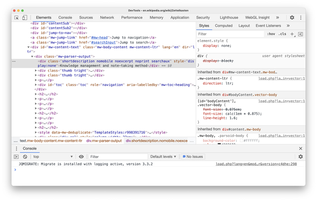

O que é:
o Dev tools está presente no navegador Google Chrome. É muito utilizado para desenvolvedores Web, já que ele possui diversas ferramentas para que a interação/análise entre o usuário a página web seja realizada com sucesso.
O ambiente devTools possui o nome Chrome DevTools. Lá, são encontradas diversas ferramentas separadas em seções, como: elementos, console, rede e aplicação. Todas elas possuem sua respectiva função e importância.
Ferramentas do Chrome DevTools:
- Elementos: mostra do que é feito a página web
- Console: é onde o usuário interage com a página
- Rede: mostras as ocorrências em segundo plano
- Aplicação: consegue explorar questões diversas, como cookies, session Storage, cache Storage, entre outros 
Como usar?
Para utilizá-lo, basta clicar em "mais ferramentas", seguindo por "ferramentas do desenvolvedor", ou na página web que deseja analisar, apertar os botões ctrl + shift + I
Para que utilizar?
Pode ser utilizado para:
- Identificar e poder desfazer bugs: isso porque o console relata erros que surgem durante o carregamento da página.
- Analisar a página em tamanhos diferentes: pode-se utilizar o devTools para analisar e trabalhar com a responsividade.
- Editar a página: pode-se editá-la por niveis de curiosidade e melhorias utilizando a guia de elementos, onde irá aparecer as propriedades CSS.
- Ver o tempo de carregamento da página: Na guia "rede", é mostrado para você o tempo que a página está levando para ser carregada. Essa informação é importante para que a página possa ser otimizada (ficando mais rápida), ou até para analisar como a concorrência se comporta nessa otimização.